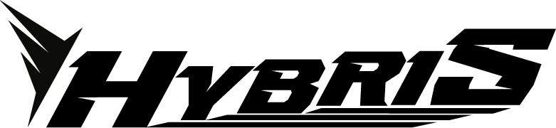
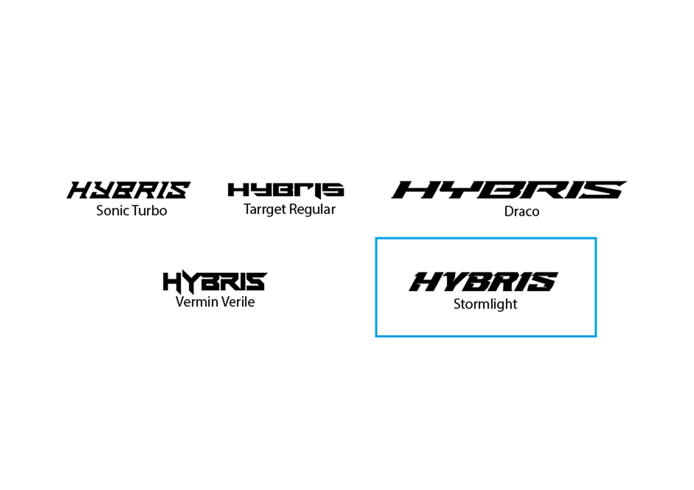
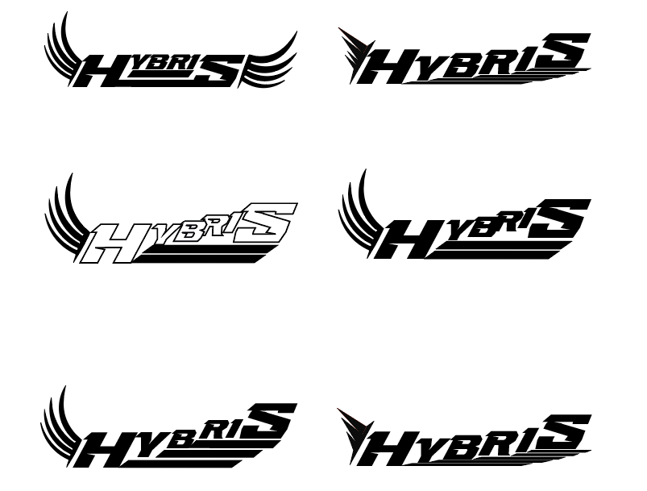
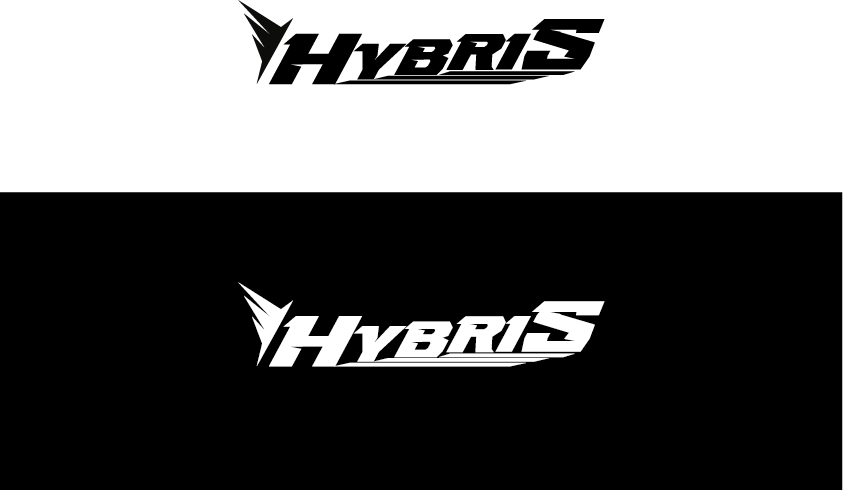

Logo “Hybris”
Logo designed for application on a coaster produced by a student of the ParksaPlanet Academy. The graphic composition was optimized to appear simple and clean, incorporating shapes and directions that suggest movement and dynamism while maintaining an orderly and easily readable look.

Show details
Moodboard
Moodboard created to explore visual languages and graphic identities in the coaster sector, featuring references to ancient Greek aesthetics and the myth of Icarus to define the stylistic direction and concept.
Font used

The typographic selection focuses on modern, dynamic typefaces with squared structures and sharp lines, evoking Greek imagery through a contemporary lens and reinforcing a strong, defined visual identity.
Drafts

Several drafts were created, focusing on the use of wings as the central element requested by the client. Each proposal explores different proportions, directions, and structures to identify the most effective and contemporary solution.
Color variations

Final logo presented in its essential color variations—black on white and white on black—to improve legibility, contrast, and adaptability across different applications.